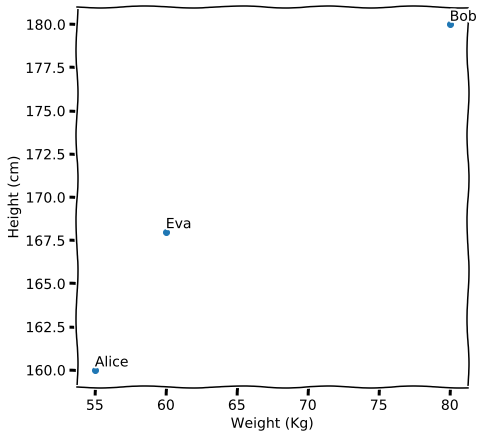
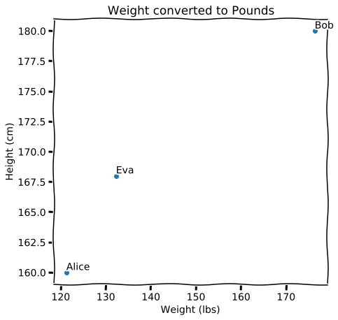
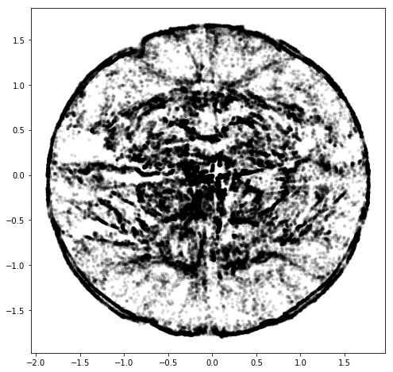

Я частенько делаю посты с вот такими непонятными картинками, но пояснений не добавляю. Отчасти потому что мне нравится, как оно может выглядеть без контекста, отчасти, потому что в двух словах объяснить очень сложно. Но в этот раз я попробую. В разных местах буду пренебрегать разными деталями, делать очень нестрогие формулировки, но попытаюсь сохранить баланс между точностью и доступностью.
В целом это вот так и работает. И мы тут между делом коснулись ещё одной штуки. Вот мы отложили одну величину по одной оси, другую по другой и поставили соответствующие им точки. Координаты получились. И ещё мы оценили что кто-то ближе, а кто-то дальше. Это уже расстояние [2].
Давайте теперь по порядку с этими двумя понятиями. Мы можем к росту и весу добавить, например, возраст и получится, что рисовать надо будет уже не на квадратике, а в кубе. А можем добавить ещё средние расходы в месяц. И надо будет в гиперкубе рисовать. И можем ещё добавлять. И рисовать на самом деле не обязательно. Да и можно всегда в квадратик, на самом деле, но об этом позже. Главное сейчас, что есть набор чисел, которые что-то говорят про наших Элис, Боба и Еву, и нам ничего не мешает откладывать их по осям.
Так вот. Мы рисовали картинку с ростом и весом. На глаз видно, что кто-то ближе, кто-то дальше. Но это не слишком формальное понятие. Мы можем приложить линейку, посчитать, что между этими двумя выйдет, скажем, 0.1, а между этими 2, и 2 > 0.1. Вот линейка измеряет так называемое евклидово расстояние. И его можно посчитать из координат. В школьной геометрии была для этого даже формула, но я знаю, что формулы просто отключают читателей, поэтому приводить её не буду. Сейчас важно только, что если мы знаем вес и рост Элис, вес и рост Боба, вес и рост Евы, то мы можем не прикладыать линейку, а сразу посчитать.
На самом деле линейка может быть не лучшим инструментом для сравнения сходства или различия. Нам подойдёт почти любая штука, которая делает из двух наборов чисел одно число, которое мы будем использовать для сравнения: мало -- начит похожи, много -- значит не похожи. К такому правилу есть определённые требования, без которых всё станет работать достаточно странно, но об этом как-нибудь в другой раз [3].
Внезапный пункт, но чтобы понимать дальнейшее, придётся и тут придумать аналогии. Вернёмся опять к той картинке с ростом и весом по осям. Что будет если её повернуть, а оси направить так, чтобы они снова были по вертикали и горизонтали. Это уже не рост и вес, а какие-то непонятные величины. Но сходство по расстояниям мы всё ещё можем оценивать. А что, если мы единицы измерения у исходной картинки поменяем? Массу из килограммов переведём в пуды, хотя бы. Картинка сожмётся. Расстояния поменяются. Но принцип будет работать дальше, можно сравнивать [4]. Хотя смысл такого сравнения, как вы видите очень относительный.

Мы немного коснулись того, что будет, если продолжать добавлять свойства нашей троице. Кубик ещё понятно как нарисовать, а дальше что делать? Ну на самом деле, с кубиком тоже всё более менее понятно, есть же проекции. Мы как-то рисуем на бумаге трёхмерный мир. Только тут это будет скорее как рентгеновский снимок.
Но с проекцией или с тенью всё понятно, легко представить. Формально это как если бы мы из всех координат оставили только две. Мне нравится аналогия, как если бы у нас была смятая бумажка, и мы вместо того, чтобы развернуть её, просто взяли бы и сплющили под прессом. Было три измерения, стало два.
Но мы так много информации просто выкидываем. В худшем случае мы просто откажемся от каких-то измерений и совсем забудем о соответствующих им свойствах. В лучшем это будет поворот, такой, что мы самые серьёзные отличия сохраним, но про остальные опять забудем. Но может быть и так, что структура данных немного сложнее. Такое бывает, когда глобальные расстояния не так важны, как локальные.
Математики любят воображать себе в таких случаях муравьёв. Вот возьмём ту же мятую бумажку, ещё не сплющенную прессом. Представим, что по ней ползёт муравей. И ему ползти от одного края листа до другого так же далеко, как если бы бумага не была смятой (представим, что перескочить через складки он не может). А если бумага сплющена, то оба конца могут быть вообще друг на друге. Ну или если вам надо в другой конец города, вы проедете на машине большее расстояние, чем если прямую линию на карте нарисовать.
Если мы хотим посмотреть с перспективы муравья и как бы развернуть бумажку, то надо использовать другие подходы. И вот есть такие штуки, которые так и делают. И получаются такие странные картинки как в моих постах.
Так вот. Что за картинки я рисую. Единственное, что в них принципиально важно, что близкие точки имеют близкие свойства. Расстояния на них не очень правдивые, но в целом приемлемые, если надо сказать что Боб сильно отличается и от Элис и от Евы, а последние две друг от друга не так уж и сильно. Но обычно это как раз развёрнутые смятые бумажки из аналогии выше. Причём так, что бумагу нам приходится смять сначала под точки, а потом уже развернуть.
До снижения размерности это как раз такие наборы чисел, с которыми запросто можно обращаться как с координатами и соответственно считать между ними расстояния. И координаты эти такие же бессмысленные сами по себе, как и смесь массы и роста.

Способов получить такое многомерное представление очень много. Все имеют какие-то свои нюансы. На пальцах попробую объяснить способ с тройками точек. Так называемый triplet loss [5]. Представим, что нам надо расположить на нашем квадратике точки, которые соответствуют свойствам разных объектов. Мы можем раскидать их случайно, а потом двигать так, чтобы похожие укладывались ближе друг к другу, а непохожие подальше. Чтобы сделать это пошагово, мы можем выбирать тройки точек. Одну похожую, другую непохожую. И потом делаем так, чтобы похожая оказалась ближе, непохожая дальше. Алису к Еве пододвинем, Боба отдвинем. Сдвинули и берём другие три точки и повторяем, пока не надоест. В конце концов всё красивенько сгруппируется и в этом даже будет какой-то смысл.
Мы на это дело можем накладывать какие-то дополнительные требования, как-то управлять процессом, но это тема многих других статей.
Да много всего. Прежде всего кластера. Вот облако похожее на утку плотно сгруппированное в одну кучку, а вот другое. А вот ещё куча мелких, а вот там вокруг какой-то сплошной шум. Значит есть какие-то группы или сообщества, в общем кто-то кто целой большой группой больше похож друг на друга, чем на другие группы.
Кто мейнстрим, а кто аутсайдер. Обычно есть плотная середина, а есть шум и переферия.
Центры притяжения, влияния. Много разных вещей зависящих от контекста. Например в визуализации графа инстаграма можно было видеть, как языковые группы связаны друг с другом. Арабский инстаграм ближе к турецкому, чем к к русскоязычному. А англоязычный самый большой и в середине. В визуализации графа телеграма видно огромное месиво политики и на переферии небольшие тематические кластера про что-то своё.